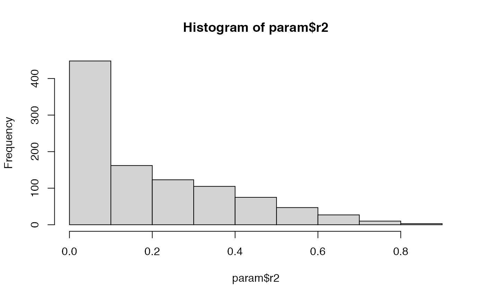
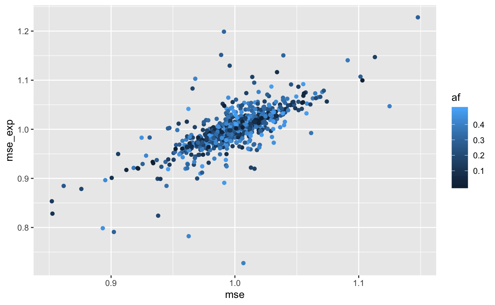
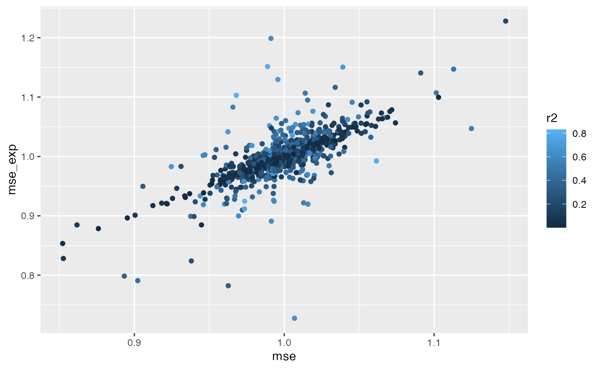
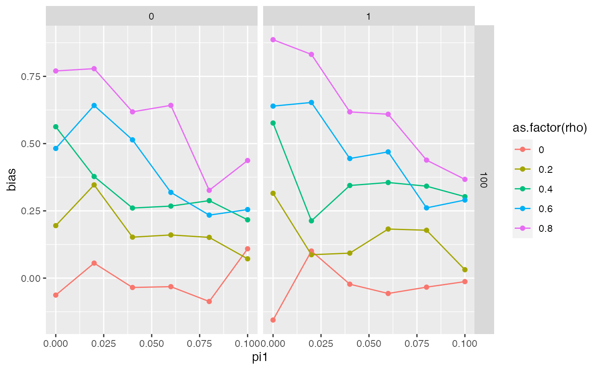

weak_instruments.Rmdlibrary(simulateGP)
#> Loading required package: tidyverse
#> ── Attaching packages ────────────────────────────────── tidyverse 1.2.1 ──
#> ✔ ggplot2 3.2.1 ✔ purrr 0.3.3
#> ✔ tibble 2.1.3 ✔ dplyr 0.8.3
#> ✔ tidyr 1.0.0 ✔ stringr 1.4.0
#> ✔ readr 1.3.1 ✔ forcats 0.4.0
#> ── Conflicts ───────────────────────────────────── tidyverse_conflicts() ──
#> ✖ dplyr::filter() masks stats::filter()
#> ✖ dplyr::lag() masks stats::lag()https://web.stanford.edu/~mrosenfe/soc_meth_proj3/matrix_OLS_NYU_notes.pdf
https://www.youtube.com/watch?v=JK-8XNIoAkI
http://econ.lse.ac.uk/staff/spischke/ec533/Weak%20IV.pdf
https://www.nber.org/econometrics_minicourse_2018/2018si_methods.pdf
https://www.ncbi.nlm.nih.gov/pubmed/21414999
https://stats.stackexchange.com/questions/48366/standard-errors-for-covariance-estimate-in-r
Parameters include:
h2 <- 0.4
nsnp <- 100
nid <- 10000
G <- make_geno(nid, nsnp, 0.5)
Gs <- scale(G)
bsim <- rnorm(nsnp, 0, sqrt(h2))
bv <- Gs %*% bsim
var(bv)
#> [,1]
#> [1,] 33.50264
sd(bv)
#> [1] 5.788147
# h2 <- b^2 * 2 * maf * (1 - maf) / vy
# ve <- vy - vgh2 <- 0.4
nsnp <- 100
nid <- 10000
G <- make_geno(nid, nsnp, 0.5)
b <- choose_effects(nsnp, h2)
y <- make_phen(b, G)
head(y)
#> [1] -0.2185599 1.1654073 -0.5593073 -0.3790148 -0.1765735 0.7313492
var(y)
#> [1] 1
bv <- G %*% b
cor(bv, y)^2
#> [,1]
#> [1,] 0.4080764
bhat <- gwas(y, G)btheory <- generate_gwas_ss(b, rep(0.5, nsnp), nid)
plot(btheory$beta ~ bhat$bhat)
plot(btheory$se ~ bhat$se)
plot(log10(btheory$pval) ~ log10(bhat$pval))Standard error of beta
\[ s_{\hat{\beta}} = \sqrt{\frac{MSE}{SSX}} \]
Check that SSX is calculated correctly when using MAF to obtain var(X)
set.seed(100)
param <- expand.grid(
af = runif(1000)/2
)
param$n <- sample(300:10000, 1000)
for(i in 1:nrow(param))
{
g <- rbinom(param$n[i], 2, param$af[i])
param$ssx_emp[i] <- sum((g - mean(g))^2)
param$ssx_emp2[i] <- var(g) * (param$n[i] - 1)
param$ssx_exp[i] <- 2 * param$af[i] * (1 - param$af[i]) * (param$n[i] - 1)
}
plot(param$ssx_emp, param$ssx_emp2)plot(param$ssx_emp, param$ssx_exp)Now check MSE
for(i in 1:nrow(param))
{
g <- rbinom(param$n[i], 2, param$af[i])
y <- g * param$b[i] + rnorm(param$n[i])
param$vy[i] <- var(y)
param$r2[i] <- cor(g,y)^2
mod <- lm(y ~ g)
param$mse[i] <- anova(mod)[[3]][2]
param$mse_exp[i] <- expected_mse(param$b[i], param$af[i], param$vy[i])
mod2 <- summary(mod)$coefficients
param$bhat[i] <- mod2[2,1]
param$se[i] <- mod2[2,2]
param$se_theor[i] <- expected_se(param$b[i], param$af[i], param$n[i], param$vy[i])
}plot(param$mse, param$mse_exp)plot(param$bhat, param$b)plot(param$se, param$se_theor)hist(param$r2)


Weak instrument bias
library(mvtnorm)
get_biv_bias <- function(n, rho, beta, pi1)
{
err <- rmvnorm(n, c(0,0), matrix(c(1,rho,rho,1), 2, 2))
eta <- err[,1]
zeta <- err[,2]
z <- rnorm(n)
x <- pi1 * z + zeta
y <- beta * x + eta
Pz <- z %*% solve(t(z) %*% z) %*% t(z)
biv <- solve(t(x) %*% Pz %*% x) %*% t(x) %*% Pz %*% y
bias <- solve(t(x) %*% Pz %*% x) %*% t(x) %*% Pz %*% eta
return(c(biv, bias))
}
param <- expand.grid(
n = c(100),
pi1=seq(0, 0.1, by=0.02),
beta=c(0,1),
rho=seq(0, 0.8, by=0.2),
sim=1:200
)
dim(param)
#> [1] 12000 5
for(i in 1:nrow(param))
{
mod <- get_biv_bias(param$n[i], param$rho[i], param$beta[i], param$pi1[i])
param$biv[i] <- mod[1]
param$bias[i] <- mod[2]
}
library(dplyr)
params <- group_by(param, n, pi1, beta, rho) %>%
summarise(biv=median(biv), bias=median(bias), nsim=n())
ggplot(params, aes(y=bias, x=pi1, group=as.factor(rho))) +
geom_point(aes(colour=as.factor(rho))) +
geom_line(aes(colour=as.factor(rho))) +
facet_grid(n ~ beta)
n <- 1000
pi1 <- 1
beta <- 1
err <- rmvnorm(n, c(0,0), matrix(c(1,0.8,0.8,1), 2, 2))
eta <- err[,1]
zeta <- err[,2]
z <- rnorm(n)
x <- pi1 * z + zeta
y <- beta * x + eta
Pz <- z %*% solve(t(z) %*% z) %*% t(z)
biv <- solve(t(x) %*% Pz %*% x) %*% t(x) %*% Pz %*% y
bias <- solve(t(x) %*% Pz %*% x) %*% t(x) %*% Pz %*% eta
t(x) %*% x
#> [,1]
#> [1,] 2000.966
t(x) %*% Pz %*% x
#> [,1]
#> [1,] 988.8171
cor(x, z)^2
#> [1] 0.4944307
t(x) %*% x * cor(x,z)^2
#> [,1]
#> [1,] 989.3389
var(x) * (length(x)-1)
#> [1] 2000.899
sum((x - mean(x))^2) / (n-1) * (n)
#> [1] 2002.902
sum(x^2)
#> [1] 2000.966
t(x) %*% x / t(x) %*% Pz %*% x
#> [,1]
#> [1,] 2.023595
sum(z^2) / (length(z) - 1)
#> [1] 0.9957517
cov(x,y) / var(x)
#> [1] 1.408792
solve(t(x) %*% x) %*% t(x) %*% y
#> [,1]
#> [1,] 1.40886
sum(x^2)
#> [1] 2000.966
u <- rnorm(n)
z <- rnorm(n)
x <- u * 2 + z + rnorm(n)
y <- u * -2 + x * 2 + rnorm(n)
res1 <- residuals(lm(x ~ z))
res2 <- residuals(lm(y ~ x))
cor(res1, res2)
#> [1] -0.2063041
cor(u, x)^2 * cor(y, u)^2
#> [1] 0.2032169(x'x)-1 x'(xb + e)
(x'x)-1 x'xb + x'ecov(g,x) = cov(g, b1*g + a1*u + e)
= b1 var(g) + a1 cov(g, u)cov(g,y) = cov(g, b2*x + a2*u + e)
= b2 b1 var(g) + b2 a1 cov(g, u) + a2 cov(g, u)
= b2 b1 var(g) + cov(g,u) (b2 a1 + a2)
= b2 (b1 var(g) + a1 cov(g, u)) + a2 cov(g, u)a <- rnorm(1000)
b <- rnorm(1000)
cov(a,b)
#> [1] -0.03606378
sum((a-mean(a)) * (b - mean(b)))
#> [1] -36.02772
sum(a * b) + sum((a-mean(a))^2) * sum((b-mean(b))^2)
#> [1] 1062550Specify